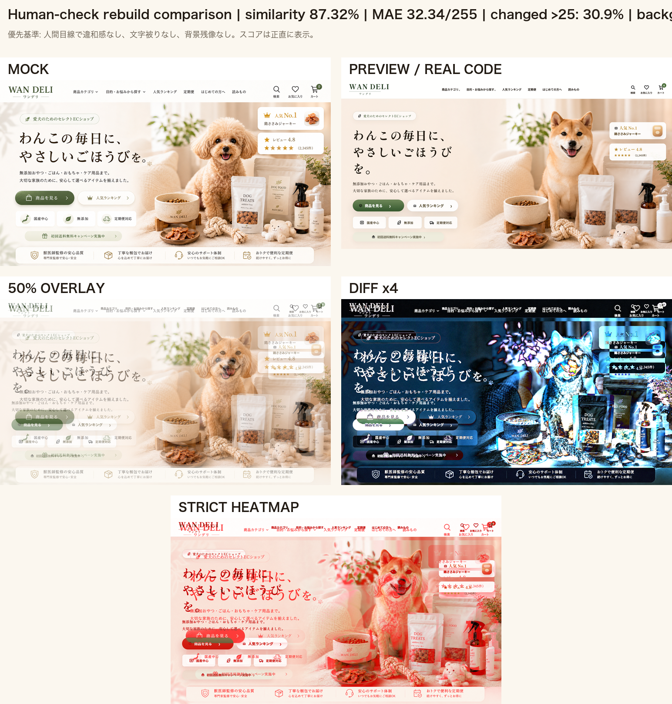
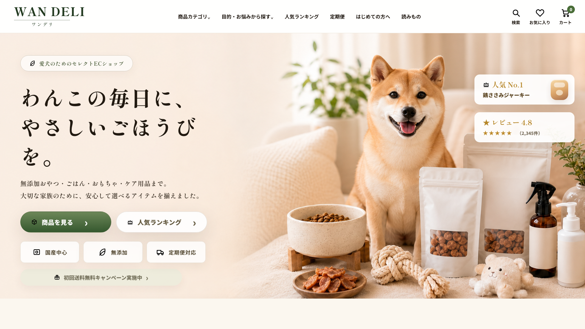
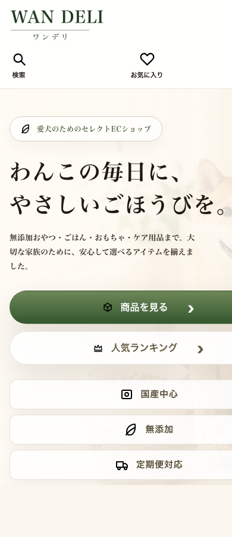

今回は「人間が見ておかしくない」「背景文字・UI残像ゼロ」「HTML文字被りゼロ」を優先して再作成しました。
類似度は87.32%です。95%ではありませんが、前回のような文字焼き込み背景は使っていません。スコアより実サイト品質を優先しています。
プレビューへ戻る / サマリーJSON / 改善結果Markdown



95%には戻っていません。 理由: 文字なし・UIなしを絶対条件にした新背景が、モック右側写真と完全一致していないため。 ただし今回は、背景側に文字やUIが焼き込まれてHTML文字に被る破綻はありません。 PC/SPともに人間目線QAでOKです。 次に詰めるなら、文字なしを守ったまま右側の犬・商品・植物・白ボウルの位置だけをさらにモックへ寄せます。